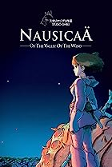
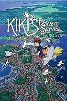
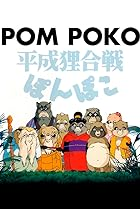
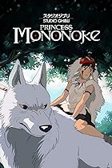
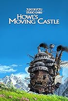
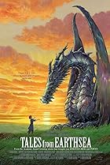
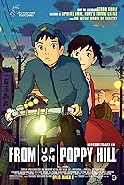

Studio Ghibli - a list of all movies by chronology
This is a list of all Studio Ghibli featured movies ordered by year of release
- Nausicaä of the Valley of the Wind (1984) 
- Castle in the Sky (1986)
- Grave of the Fireflies (1988)
- My Neighbor Totoro (1988)
- Kiki's Delivery Service (1989) 
- Only Yesterday (1991)
- Porco Rosso (1992)
- Ocean Waves (1993 TV Movie)
- Pom Poko (1994) 
- Whisper of the Heart (1995)
- Princess Mononoke (1997) 
- My Neighbors the Yamadas (1999)
- Spirited Away (2001)
- The Cat Returns (2002)
- Howl's Moving Castle (2004) 
- Tales from Earthsea (2006) 
- Ponyo (2008)
- The Secret World of Arrietty (2010)
- From Up on Poppy Hill (2011) 
- The Wind Rises (2013)
- The Tale of The Princess Kaguya (2013)
- When Marnie Was There (2014)
- Earwig and the Witch (2020 TV Movie)
- The Boy and the Heron (2023)